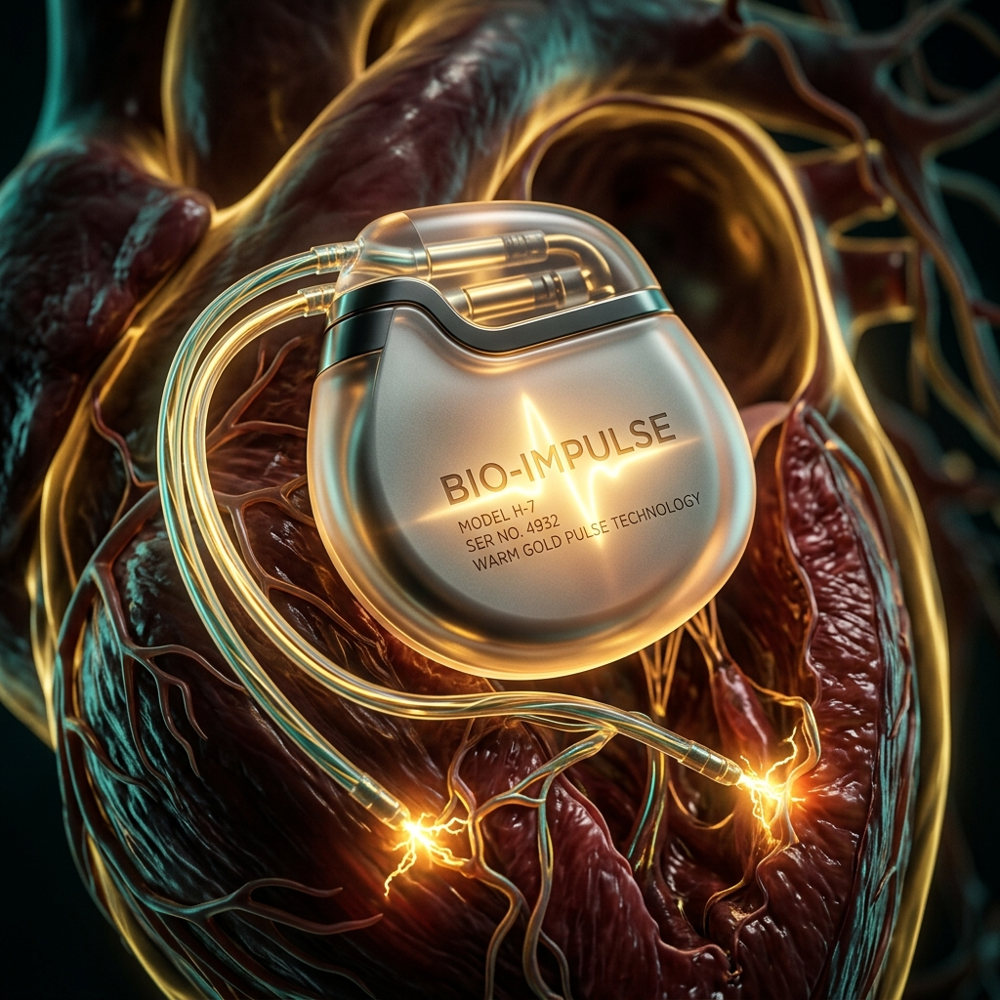

Living with a Pacemaker: Safety, Costs, and What to Expect
Receiving a pacemaker is a life-saving intervention for patients suffering from bradycardia (an unusually slow heart rate) or heart block. A pacemaker ensures the heart beats at a normal rhythm, preventing fainting, extreme fatigue, and cardiac arrest.
The Implantation Procedure
Pacemaker surgery is very straightforward and safe. Under local anesthesia, Dr. Hari Om Tyagi implants the tiny, battery-powered generator under the skin just beneath the collarbone. One or more insulated wires (leads) are guided through a vein directly into the heart to deliver electrical impulses.

Common Anxieties Answered
- How long does the battery last? Modern pacemakers generally last between 8 to 15 years depending on usage. When the battery runs low, an outpatient procedure is done to replace the generator unit only.
- Can I use a microwave? Absolutely! Modern pacemakers are heavily shielded. Household appliances like microwaves, TVs, and typical electronics pose entirely zero risk.
- What about Airport Security? Yes, you need to show your Pacemaker ID card to airport security. Usually, a simple hand-wand check avoids the heavy metal detectors.
- MRI Safety? At Haripriya, we only use the latest MRI-compatible pacemakers, meaning you are never blocked from receiving diagnostic scans in the future.
Once you recover from the initial incision, life returns to absolute normal. Many of our patients in West UP go back to playing sports, traveling, and living vibrant lives without the fear of sudden fainting.